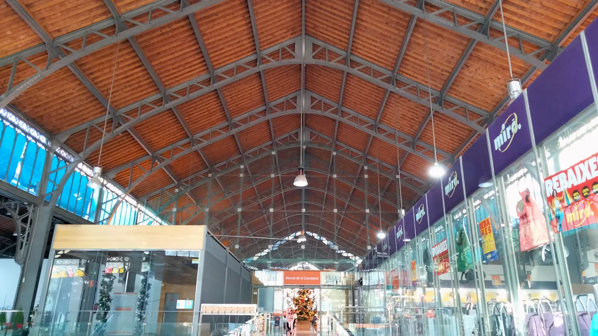
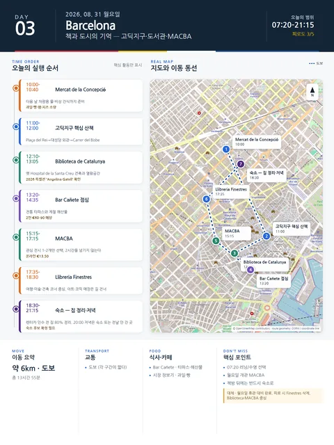

Day 3 · 8/31 월 · Barcelona

오늘의 주요 장소


- 핵심 실행
- 시장·Gòtic·도서관·MACBA
- 권장 출발
- 09:00 전후 시작
- 완충
- 오후 MACBA 전 60분 휴식
- 예약
- 이 날짜로 잡힌 예약 없음 · 현황
시간표
| 시간 | 일정 | 실행 포인트 |
|---|---|---|
| 07:20–08:10 | Jason 러닝 / Julia 선택 수영 | 러닝: 숙소 인근 Parc de Joan Miró(도보 약 300m)–Parc de l’Espanya Industrial(Sants 옆) 연결 왕복. 수영: CEM Joan Miró(Parc de Joan Miró 쪽) 또는 CN Atlètic-Barceloneta 선택 |
| 08:10–09:30 | 숙소 아침·샤워 | 운동을 하지 않으면 이 시간을 늦잠과 세탁에 사용한다. |
| 10:00–10:40 | Mercat de la Concepció | 과일, 빵, 햄, 치즈를 소량 구입. 다음 날 차 안에서 먹을 물과 비상 간식도 준비한다. |
| 11:00–12:00 | 고딕지구 핵심 산책 | Plaça del Rei → Barcelona Cathedral 외관 → Carrer del Bisbe. 좁은 골목에서 휴대폰을 들고 오래 서 있지 않는다. |
| 12:10–13:05 | Biblioteca de Catalunya | 옛 Hospital de la Santa Creu 건축과 열람공간의 분위기. 2026 특별전 ‘Angelina Gatell, una vida compromesa’ 확인 |
| 13:20–14:35 | Bar Cañete 점심 | 전통 타파스와 제철 해산물. 예약 필수에 가깝다. 2인 €60–90 — 계획가(2026-08 조사) |
| 14:35–15:10 | 라발 산책·커피 | Rambla del Raval을 길게 걷기보다 MACBA 쪽으로 짧게 이동한다. |
| 15:15–17:15 | MACBA | 월요일 개관 (2026-08 확인). 관심 전시 1–2개만. 온라인 €13.50 |
| 17:35–18:30 | Llibreria Finestres | 일반서점과 아트·코믹 매장이 길 건너 두 건물로 운영된다. 여행·미술·건축 코너 중심으로 본다. |
| 18:30–19:30 | 숙소 휴식·짐 정리 | 다음 날 렌터카 인수 때문에 80% 이상 짐을 정리한다. 액체·간식·전자기기를 별도 가방에 둔다. |
| 20:00–21:15 | 저녁 선택 | 가벼운 식사는 숙소. 외식은 Bodega Joan 또는 Bar Cañete 중 전날 가지 않은 곳을 사용한다. |
피로도
3/5
이 날의 장소
Barcelona 역사도심 — Barri Gòtic·Rambla 권역 MustBarri Gòtic MustBiblioteca de Catalunya RecommendedMACBA Optional
일자별 시간표와 본문 표기에서 찾은 것이다. 하루의 전부가 아니라 장소 카드가 있는 것만 담는다.
이 날의 메모
책과 도시의 기억 — 고딕지구·카탈루냐 도서관·MACBA
- 오늘의 결론: 이동은 많아 보이지만 각 구간이 짧다. MACBA에서 2시간을 넘기지 않고, 책방 뒤에는 반드시 숙소로 돌아온다.
실행 시간표
월요일은 피카소미술관과 여러 박물관이 쉬는 날이다. 이를 단점으로 보지 않고 도서관·거리·현대미술·책방을 연결하는 날로 사용한다.
상세 실행 확인
- 최고 리스크
- 월요일 휴관·도보 누적
- 우선 삭제
- Finestres·운동
- 대체안
- Biblioteca/MACBA 중심
- 식사·휴식
- 시장 또는 샌드위치
- 잠금 필요
- MACBA·식당
Google 실행지도
책과 도시의 기억 — 고딕지구·카탈루냐 도서관·MACBA
지도 펼치기
지도는 펼칠 때만 불러옵니다.
Daily Action Map

실제 좌표와 OpenStreetMap을 사용한 실행용 요약입니다. 도로·대중교통 상황은 출발 직전에 다시 확인하세요.